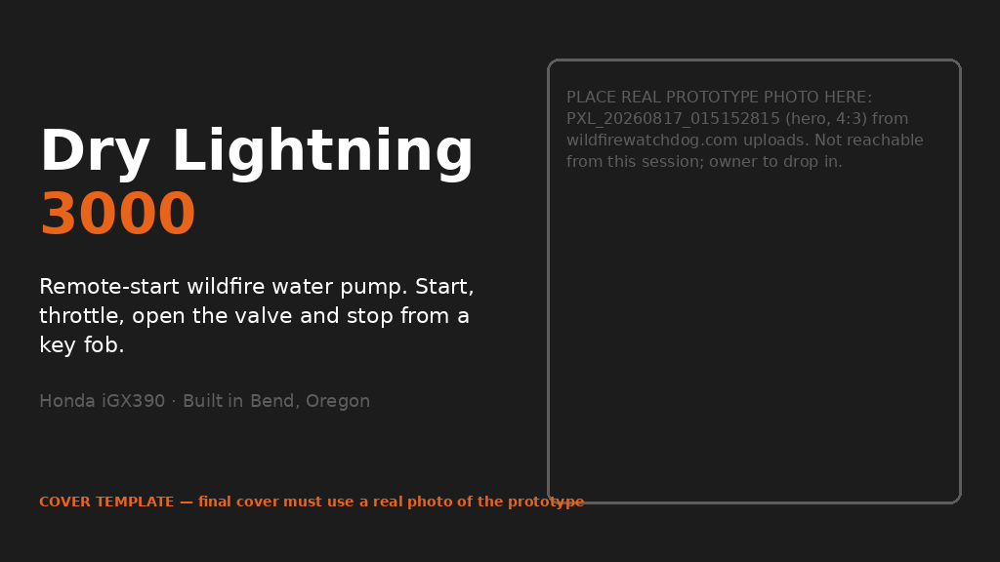
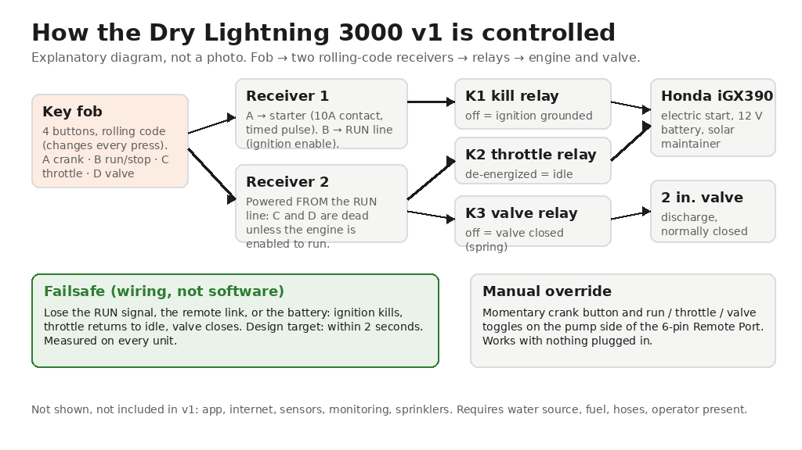
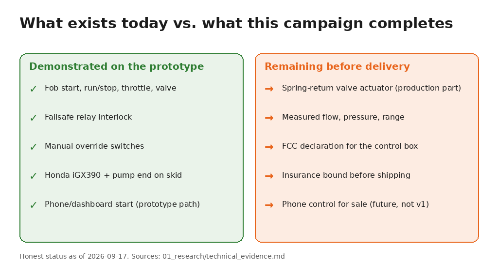
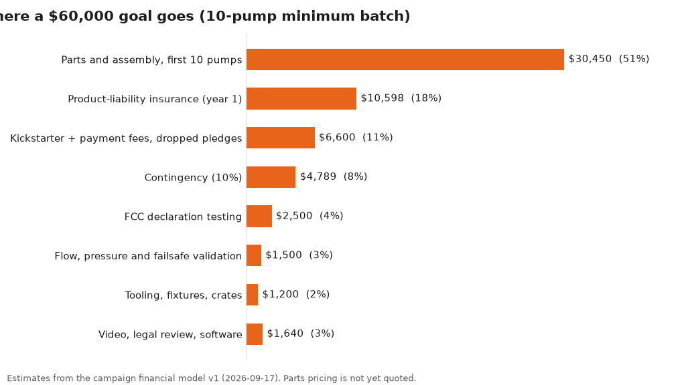
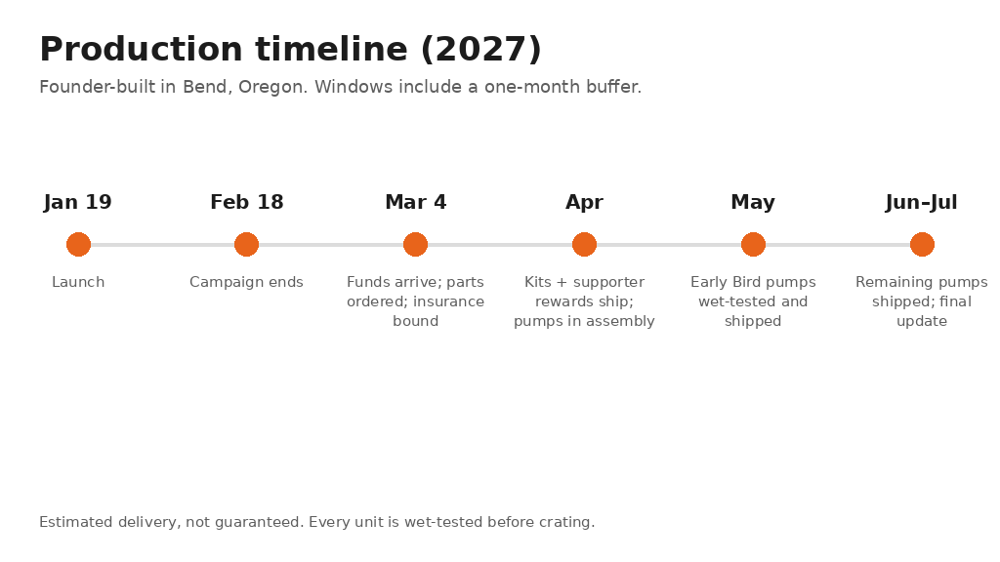

Dry Lightning 3000: Remote-Start Wildfire Water Pump
A Honda-powered high-pressure pump you start, throttle and open from a key fob, so nobody stands next to it in the smoke. Built in Oregon.

Cover template. The final cover must be the real prototype photo (PXL_20260817_015152815) from the product page.
The one-sentence version
The Dry Lightning 3000 is a gas-engine high-pressure water pump you can start, run up to full throttle, open the water valve on, and shut down from a handheld remote, so you can wet down your home, barn or defensible space without standing at the pump.
Why I built this
I'm Jeremy Coon. I live and work in Bend, Oregon, in the middle of the country's wildland-urban interface. For the past two years I have been building remote-control systems for water pumps in my shop: first wireless sprinkler controllers in a toolbox, then a fixed three-building system I installed on the Metolius River in spring 2026, and then the question that turned into this product.
Every gas fire pump on the market assumes somebody is standing next to it. In a real fire, that somebody has evacuated, is asleep, or does not want to walk toward the embers to pull a rope. I wanted a pump I could start from the truck, the porch, or the end of the driveway, and shut down the same way.
So I designed the control system around a commercial Honda engine: relays that turn the ignition, starter, throttle and a powered discharge valve into four buttons on a rolling-code key fob, wired so that if the remote link or the power ever drops, the engine kills, the throttle returns to idle and the valve closes on its own. I built the prototype, filed two provisional patent applications on the automatic version in January 2026, and by August 2026 had the unit running from the fob and, in the prototype version, from my phone.
What it does


Explanatory diagram, not a photo.
What exists today vs. what this campaign completes

What you get
- Honda iGX390 electric-start engine, 389 cc, on a powder-coated steel skid with lifting points
- Matched high-pressure pump end, 2 in. suction and discharge
- Four-channel rolling-code remote system with one fob in use and three spares
- Sealed relay control box with failsafe wiring and manual override switches
- 2 in. 12 V spring-return electric discharge valve and 2 in. camlock fitting
- 12 V battery, USB power bank and solar maintainer panel
- Documented 6-pin Remote Port for future controllers
- Quick Start Guide, warning labels, wet-test certificate with your unit's measured flow and pressure
- 12-month limited warranty and direct support from the builder
Not included: fuel, hoses, nozzle, strainer (see the Hose & Nozzle Package), sprinklers, a water source, installation.
Performance
The pump end is specified in the 150 GPM / 140 PSI class at 3,600 rpm. [REVIEW] catalog-class, not measured; keep "specified" wording. Every unit is wet-tested before it ships and you receive its measured numbers.
Phone control: where it really stands
The prototype has a second control path: a wireless link to a self-hosted dashboard that I have used to start and stop the pump from my phone. It works in my shop. It is not in the v1 reward because a custom radio needs its own FCC certification, the product-liability policy for v1 is scoped to a locally-operated pump with no app or internet, and phone control depends on power, connectivity, water and hoses already being in place. Every DL3000 ships with the Remote Port so a future connected controller can plug in without rewiring. It is a development goal, not a stretch reward.
Rewards (draft)
- Name on the Founding Backers page (opt-in)
- Weatherproof decal, all updates
- Two receivers, two fobs, relay box, harness with Remote Port
- 2 in. 12 V spring-return valve, guide, phone support
- Honda iGX390 electric-start with 12 V battery only
- Complete DL3000 v1 base package, wet-tested
- Complete DL3000 v1 base package
- Pump plus 50 ft 2 in. discharge hose, nozzle, 20 ft suction hose with foot valve and strainer, extra fob
Add-ons: extra fob $45 · second hose $220 · 24-month warranty $350. Contiguous US only.
Where the money goes

Production timeline

Shipping
Contiguous United States only. Pumps ship drained and without fuel, crated on a pallet (about 165 lb packed), by LTL freight with liftgate to a residential address. Freight is a flat $349 with your pledge. Pickup in Bend, Oregon, refunds the freight charge.
Risks and challenges
- Supply. Engines are stocked by US distributors; pump ends, spring-return valves and frames are small-batch purchases without quotes in hand yet. 10% contingency, one-month buffer.
- Regulatory. Pre-certified radio modules; the assembled control box still needs an FCC Supplier's Declaration of Conformity (scheduled March). No UL listing exists for this product class and none is claimed.
- Patent. Two provisional applications; "patent pending," not granted; v1 fob control is not itself their subject.
- Performance claims. Catalog-class until each unit is wet-tested.
- Capacity. Founder-built, about four pumps a week; capped at 35.
- Insurance. Quoted, not yet bound; bound before any pump ships.
- Freight. Crated with corner posts, insured, photographed before pickup.
- One person. Early Birds built first; jig-based work so a helper can step in.
FAQ
Is this a sprinkler system?
No. It is a pump with remote engine and valve control. You connect your own hoses, nozzle or sprinkler lines.Does it start by itself when it detects fire?
No. Version 1 starts only when you press the fob. Automatic and phone-triggered operation exist as a prototype and are a future development goal.How far does the remote work?
Rolling-code RF, roughly 150 ft line of sight as specified by the receiver maker. Each unit's range is measured before shipping.What happens if the signal drops or the battery dies?
Losing the RUN signal kills the ignition, returns the throttle to idle and closes the valve. Manual switches keep working.Can someone else's remote start my pump?
Rolling codes change every transmission, so a captured signal cannot be replayed. Receivers are paired to your fobs before shipping. It is not AES-encrypted.What water source do I need?
Any source the 2 in. suction hose can reach, with a strainer. Suction lift and hose length reduce flow.What are the real flow and pressure numbers?
150 GPM / 140 PSI class at 3,600 rpm as specified; your unit's measured wet-test numbers ship with it.How long does it run on fuel?
Design estimate about ten hours from a 10-gallon auxiliary tank at full throttle. An estimate, not a measured figure.Can I use it while I evacuate?
No. Follow evacuation orders. It is not designed for unattended operation.Will this get me an insurance discount?
We make no claim about discounts or insurer programs. Ask your agent.Is it UL or ETL listed?
No; there is no UL listing for this product class. Honda's EPA/CARB certification on the engine; FCC declaration on the control box.Is it patented?
Patent pending: two provisional applications filed January 2026 on the automatic system. The fob-controlled v1 is not itself their subject.Why Honda?
Electric start, a drive-by-wire throttle the control box can command, and a nationwide dealer network.Can I retrofit my existing pump?
Honda iGX390 electric-start with a 12 V battery: yes, with the Remote Control Kit. Other engines: not in v1.Do I need internet, Wi-Fi or a phone?
No.Is there a subscription?
No.Where do you ship?
Contiguous US only, LTL freight with liftgate. Bend pickup available.What is the warranty?
12 months on frame, harness, control box, remote system, valve and pump end; Honda's warranty on the engine. Optional 24-month add-on.Is fuel or oil shipped in the unit?
No. Units ship drained.What maintenance does it need?
Honda's engine schedule, a fob battery yearly, and a monthly test run in fire season.Can I get a refund?
Before parts are ordered, yes in full. After that, at our discretion less non-recoverable costs.Do you collect sales tax?
No. Backers outside Oregon may owe use tax.What if the goal is not reached?
Nobody is charged and nothing is built.Use of AI (disclosure)
The product contains no AI. Campaign text was drafted with AI assistance from the founder's own records and edited by the founder. All product photographs and video are real footage of the actual prototype; no AI-generated or AI-altered images of the product are used. Explanatory diagrams are labeled as illustrations.